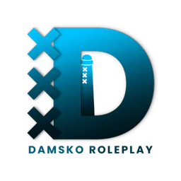

Damsko V2 is een unieke FiveM roleplay server met veel custom scripts en een toegewijde community.
Servernaam: Damsko V2
Max spelers: 128/p>
Discord: Join onze Discord
F8 Connect: connect damsko.xurver.nl
Voor vragen en support, sluit je aan bij onze Discord server.